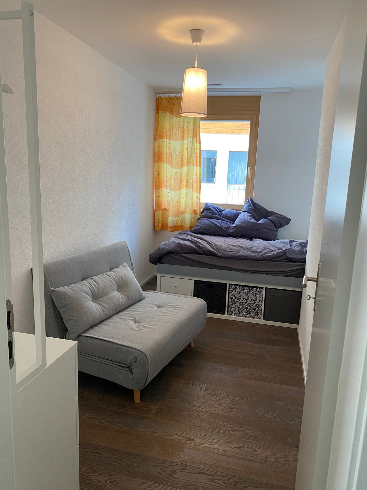
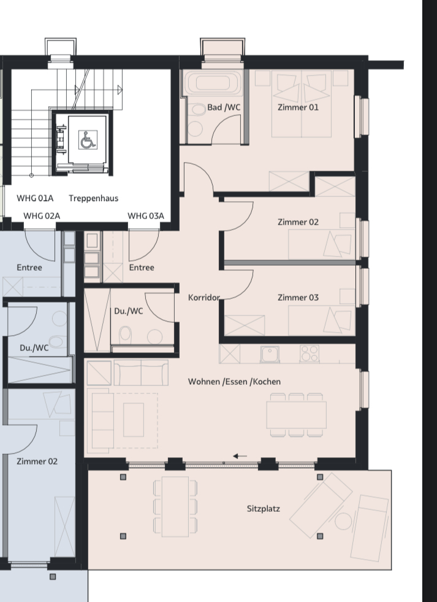
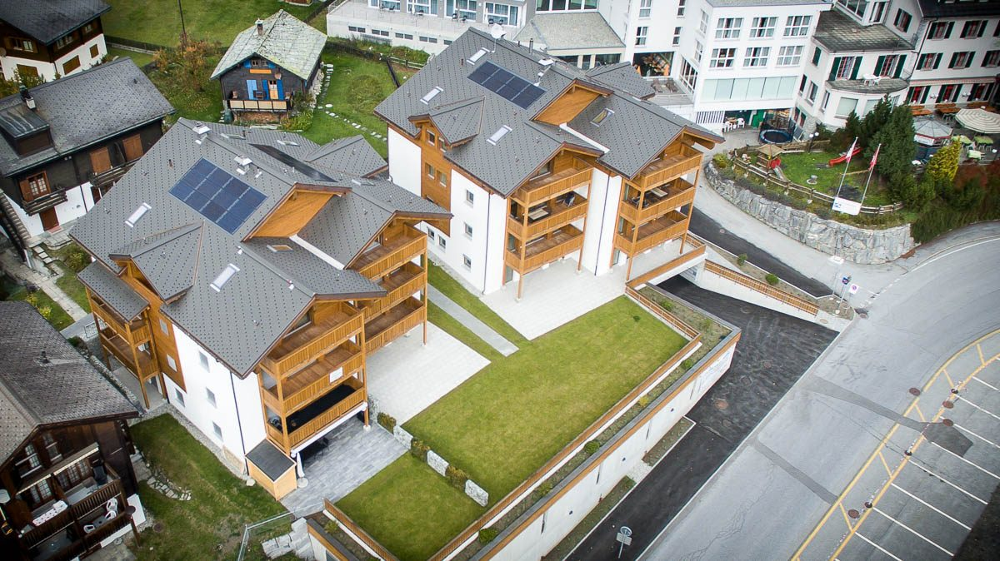

Blatten-Belalp · Wallis · 1'300 m ü. M.
Schnee vor der Tür, Sonne auf der Terrasse – unsere Sunnestube in Blatten-Belalp.
Eine helle 4½-Zimmer-Ferienwohnung mit Südterrasse, 80 Meter von der Belalp-Bahn. Skifahren ab der Haustür, danach Fondue mit Blick auf die Südalpen.
80 m
zur Talstation Belalp-Bahnen
3'100 m
Skigebiet Belalp bis zum Hohstock
4½
Zimmer, Südlage, 6 Schlafplätze
Ski-in
Skiraum im Haus, Tiefgarage mit Lift
Die Wohnung
Warm drinnen, Winter draussen.
4½ Zimmer im Parterre der Residence Panorama (Haus B). Nach Süden ausgerichtet, mit eigener Terrasse und Blick auf das verschneite alte Blatten und die Walliser Südalpen.






Grundriss
Drei Zimmer, zwei Bäder, eine Terrasse.
Wohnen, Essen und Kochen in einem Raum mit direktem Zugang zum Sitzplatz. Dahinter der ruhige Schlaftrakt: drei Zimmer, Bad mit Wanne, Dusche mit WC beim Eingang.

Residence Panorama, Haus B rechts – die Sunnestube liegt im Parterre.
Schlafen
Boxspringbett, Zimmer mit zwei Einzelbetten, Zimmer mit Einzelbett und Bettsofa.
Terrasse
Eigene Südterrasse mit Gasgrill – und Blick, der nie langweilig wird.
Küche
Offene Küche mit Geschirrspüler, Nespresso, Kühlschrank mit Gefrierfach. Fondue-Set und Tischgrill inklusive.
Zwei Bäder
Eines mit Dusche, eines mit Badewanne – jeweils mit WC.
Tiefgarage & Lift
Einstellhallenplatz, von dort mit dem Lift direkt zur Wohnung.
Ski- & Veloraum
Abschliessbarer Gemeinschaftsraum im Erdgeschoss, Waschküche im Haus.
Blatten-Belalp
Erst die Piste, dann die Stube.
Blatten liegt auf 1'300 Metern oberhalb von Naters – autofreies Dorf, Walliserhäuser, und die Belalp direkt vor der Haustür. Die Bahn bringt dich in Minuten ins Skigebiet, das bis auf 3'100 Meter reicht. Sonnenhang, Pulverschnee, Blick auf den Aletschgletscher – und am Abend ist die Stube in Gehdistanz.

Gut zu wissen
Winter und Sommer auf einen Blick.
Das Wichtigste für die Planung – aktuelle Öffnungszeiten, Pistenberichte und Veranstaltungen findest du auf belalp.ch.
Winter
Saison Mitte Dez. – Anfang April47 km
Pisten, 11 Anlagen
3'118 m
Hohstock, höchster Punkt
8.5 km
Schlittelwege
- —Skifahren ab der Haustür: 80 m zur Talstation, Skiraum und Tiefgarage im Haus.
- —Abseits der Piste: rund 11 km gespurte Winterwanderwege, 20 km Schneeschuhtrails (Rischinerwald, Holzji).
- —Belalp Hexe: die legendäre Hexenabfahrt, jeweils Mitte Januar – nächste Austragung 16./17. Januar 2027.
- —Nach dem Skitag: Fondue-Set und Tischgrill stehen bereit, Gasgrill auf der Terrasse auch im Winter.
Sommer
Juni – Oktober60 km
markierte Wanderwege
124 m
Hängebrücke Massaschlucht
UNESCO
Welterbe Jungfrau-Aletsch
- —Aletschgletscher: Panoramawege ab Belalp mit Blick auf den grössten Gletscher der Alpen.
- —Klassiker: Belalp – Hängebrücke – Riederalp, Massaweg, Lüsgersee, Gredetschtal, Hohfluh.
- —Mit Velo und Kindern: Mountainbike-Routen, Canyoning und Klettern in der Massaschlucht, Besucherzentrum Naters.
- —Abends: Gasgrill auf der Südterrasse, Veloraum im Haus.

Über uns
Eine Familie aus dem Bärnbiet mit einem Herz im Wallis.
Vor ein paar Jahren haben wir unser Herz an die Region Blatten-Belalp verloren. Wir geniessen das gemeinsame Skifahren im Winter und die vielen Abenteuer im Sommer.
2021 konnten wir uns den Traum einer eigenen Ferienwohnung erfüllen. Die Sunnestube ist unser Rückzugsort – und ab und zu teilen wir ihn gerne mit Menschen, die diese Ecke genauso schätzen wie wir.
Unterwegs auf Instagram: @sunnestubeFür Gäste
Gelegentlich vermieten wir – an Familien und Freunde der Region.
Die Sunnestube ist keine klassische Ferienvermietung. Wenn wir nicht selbst vor Ort sind, freuen wir uns, wenn Menschen, die zu uns passen, die Wohnung geniessen. Wer Interesse hat, schreibt uns einfach – wir melden uns persönlich.
Anfrage sendenGut zu wissen
Kontakt
Schreib uns.
Fragen zur Wohnung, zur Region oder eine Anfrage – wir antworten persönlich, meist innert ein paar Tagen.